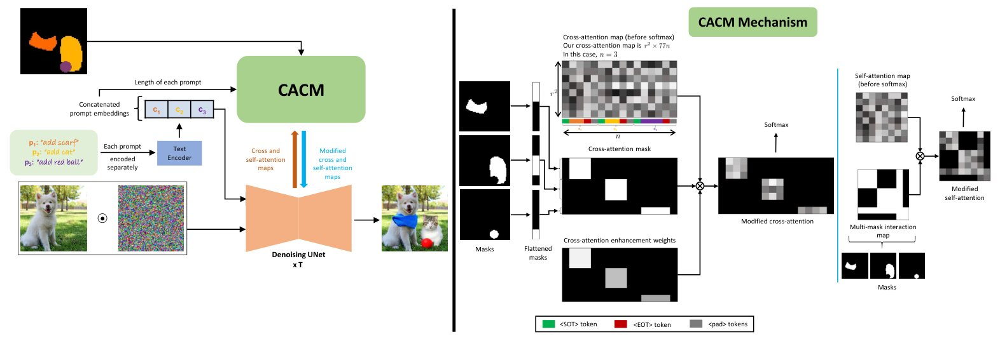
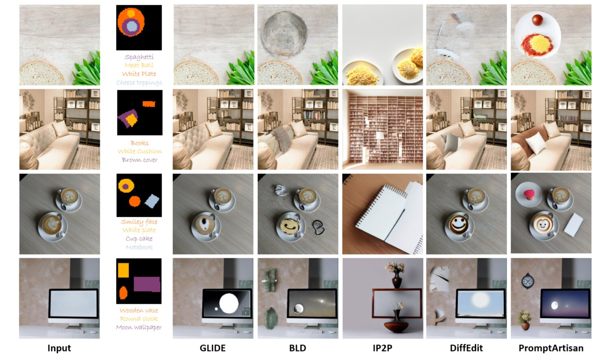
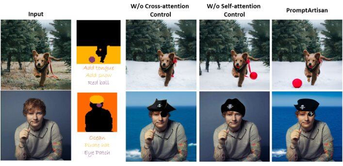
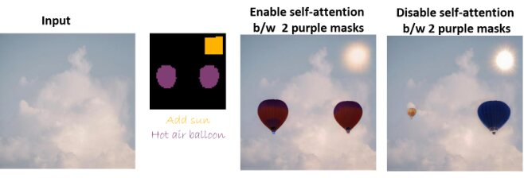

PromptArtisan: Multi-instruction Image Editing in Single Pass with Complete Attention Control
Paint several edits at once: each mask gets its own instruction, applied in a single pass with no extra training.
Samsung Research India Bangalore
- 1 passfor any number of mask-prompt pairs
- Zero-shotbuilt on a pre-trained InstructPix2Pix, no training
- 4.35user-study preference rate, next best 2.54
Abstract
We present PromptArtisan, a groundbreaking approach to multi-instruction image editing that achieves remarkable results in a single pass, eliminating the need for time-consuming iterative refinement. Our method empowers users to provide multiple editing instructions, each associated with a specific mask within the image. This flexibility allows for complex edits involving mask intersections or overlaps, enabling the realization of intricate and nuanced image transformations. PromptArtisan leverages a pre-trained InstructPix2Pix model in conjunction with a novel Complete Attention Control Mechanism (CACM). This mechanism ensures precise adherence to user instructions, granting fine-grained control over the editing process. Furthermore, our approach is zero-shot, requiring no additional training, and boasts improved processing complexity compared to traditional iterative methods. By seamlessly integrating multi-instruction capabilities, single-pass efficiency, and complete attention control, PromptArtisan unlocks new possibilities for creative and efficient image editing workflows, catering to both novice and expert users alike.
Complete Attention Control Mechanism
Text-only editing struggles to say where a change should go, and chaining edits one by one is slow and lets errors accumulate. PromptArtisan takes several mask-prompt pairs and runs them together through a pre-trained InstructPix2Pix, steering the denoising UNet’s attention so each prompt only affects its own region.
- Cross-attention control. Each prompt’s tokens are restricted to the pixels of their own mask, and their attention scores are boosted for reliable content generation. Start and padding tokens are excluded from the boost, since they tend to promote background.
- Self-attention control. Pixels of one mask are prevented from attending to pixels of another, so contents don’t leak between regions. If two masks share a colour, self-attention is enabled between them, so the same object can be inserted in several places.

Results
We compare against GLIDE, Blended Latent Diffusion (BLD), InstructPix2Pix (IP2P) and DiffEdit, and, for inversion-based methods, Imagic and Null-text Inversion (NTI), on 30 test samples from MiE-Bench.

| Metric | GLIDE | BLD | IP2P | DiffEdit | Imagic | NTI | PromptArtisan |
|---|---|---|---|---|---|---|---|
| CLIP Score | 22.08 | 27.02 | 27.79 | 23.55 | 17.02 | 27.74 | 28.78 |
| PickScore | 0.0876 | 0.1371 | 0.1288 | 0.1138 | 0.1025 | 0.1070 | 0.3230 |
| Metric | GLIDE | BLD | IP2P | DiffEdit | Imagic | NTI | PromptArtisan |
|---|---|---|---|---|---|---|---|
| Pref. rate | 1.39 | 2.54 | 1.77 | 1.65 | 1.22 | 2.41 | 4.35 |
Ablation and additional capabilities
Removing either attention control hurts: without cross-attention control the instructions bleed into each other, and without self-attention control the regions interfere. Using the same mask colour lets self-attention flow between masks, which places the same object in multiple spots at once.


BibTeX
@inproceedings{swami2025promptartisan,
title = {PromptArtisan: Multi-instruction Image Editing in Single Pass with Complete Attention Control},
author = {Swami, Kunal and Chittersu, Raghu Vamsi and Adlinge, Pranav and Irny, Rajeev and Doodekula, Shashavali and Shukla, Alok},
booktitle = {IEEE International Conference on Acoustics, Speech and Signal Processing (ICASSP)},
year = {2025},
note = {arXiv:2502.10258}
}